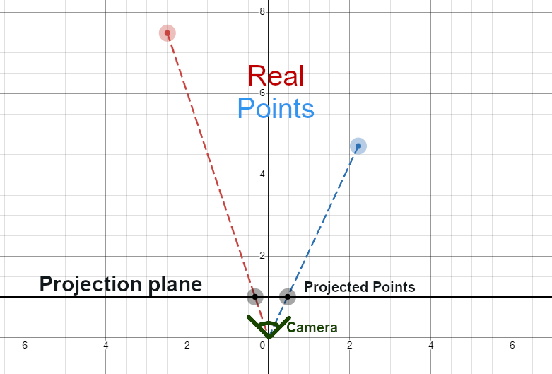
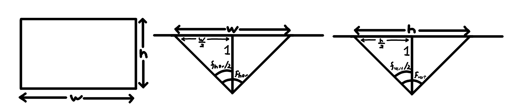

This mod is completely useless, since firstly it's just a demo, but also because it's a feature in Onix already. However, it was an interesting problem and I wanted to figure it out myself.
The goal is to find the math that takes a point in 3d and finds where it is on the player's screen.
To do this, we first translate the point so that the camera is at (0, 0, 0). Then we rotate the point around the camera against to the camera's rotation. After those two steps, we end up with the camera being centered at the origin and facing in the +z direction, while the point is still in the right place relative to the camera. This makes our lives a lot easier. The problem now is that the point is in three dimensions, while screens are two-dimensional. To flatten the point to two dimensions, we can project it onto a plane. In the diagram below, the scene is viewed from below, so looking in the +y direction.
Here the points are projected onto the plane \(z=1\). By similar triangles, \(\frac{x_{proj}}{z_{proj}}=\frac{x}{z}\). Since we chose \(z_{proj}\) to be 1, \(x_{proj}=\frac{x}{z}\). The same logic goes for the y-direction, \(y_{proj}=\frac{y}{z}\).
Now that the 3d points have been flattened, all we have to do is map them to the screen, since right now there's no guarantee that the points on the projection plane actually line up with the screen.
That's what FOV or "field of view" is for. If your FOV is 90°, you can see 45° upwards and 45° downwards. We can use that to find the cutoff where points on the projection plane leave the screen. We can then map those to the top and bottom pixel values of the screen. To do that, I like to use my trusty map range function:
function mapRange(value, inMin, inMax, outMin, outMax)
return (outMax - outMin) * (value - inMin) / (inMax - inMin) + outMin
end
The top and bottom cutoffs can be found by $$ {y_{cut} = \pm tan(\frac{f_{vert}}{2})} $$ Where \(f_{vert}\) is the vertical FOV, the one that the player chooses in settings. This will be different from the horizontal FOV, which is needed to find the cutoffs in the x-direction.
Thankfully, the horizontal FOV can be found using only the vertical FOV and the aspect ratio of the screen, \(\alpha\).
$$ {\frac{w/2}{1}=tan(\frac{f_{hor}}{2}) \Rightarrow w=2tan(\frac{f_{hor}}{2})} $$ $$ {\frac{h/2}{1}=tan(\frac{f_{vert}}{2}) \Rightarrow h=2tan(\frac{f_{vert}}{2})} $$ $$ {\frac{w}{h}=\alpha} $$ $$ {\frac{2tan(\frac{f_{hor}}{2})}{2tan(\frac{f_{vert}}{2})}=\alpha} $$ $$ {tan(\frac{f_{hor}}{2}) = \alpha \cdot tan(\frac{f_{vert}}{2})} $$ $$ {f_{hor} = 2arctan(\alpha \cdot tan(\frac{f_{vert}}{2}))} $$ $$ {x_{cut} = \pm tan(\frac{f_{hor}}{2})} $$